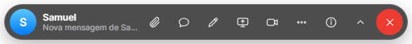
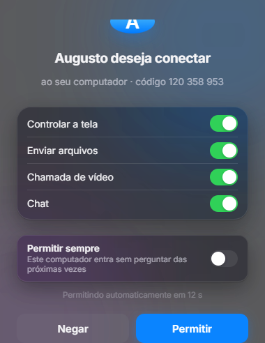
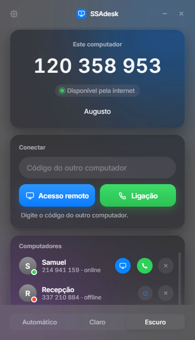
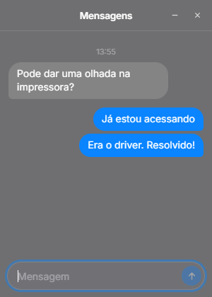
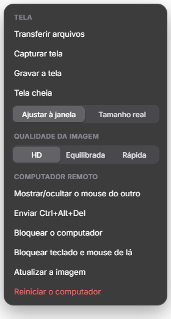
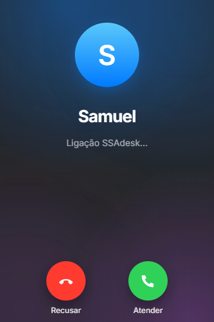

SSAdesk
SSAdeskAcesso remoto
simples e seguro.
Controle outro computador, faça chamadas, converse e desenhe na tela. Sem servidores no meio, criptografado de ponta a ponta.
Windows 10 e 11 · macOS 12 ou mais novo




Tudo numa barra discreta.
Ela fica no topo da tela remota, acompanha a janela e recolhe quando você quiser.
Acesso remoto
Veja e controle o outro computador em alta qualidade, com os dois mouses visíveis na tela.
Ligação e vídeo
Ligue para outro computador como no FaceTime, com câmera, microfone e tela compartilhada.
Chat em tempo real
A mensagem aparece na hora do outro lado, com som e aviso de não lidas.
Lousa na tela
Desenhe e aponte por cima da tela. Os dois lados veem a mesma anotação ao mesmo tempo.
Envio de arquivos
Arraste arquivos para a barra e eles chegam do outro lado, pelo mesmo caminho seguro.
Informações da conexão
Latência, qualidade e o caminho usado, além de processador, memória e disco dos dois lados.
Uma barra que não
atrapalha o trabalho.
Ela acompanha a janela da tela remota e some quando você minimiza. Cada pessoa vê apenas a própria barra.
- Recolhe para cima e volta num clique
- Aviso de mensagens não lidas
- O X encerra tudo nos dois computadores
Ninguém entra sem
você deixar.
Antes de qualquer acesso, o computador mostra quem está pedindo e o que será liberado. Você decide item por item.
- Tela, arquivos, chamada e chat em separado
- "Permitir sempre" para quem você confia
- Acessos salvos podem ser revogados
Controle completo
da tela remota.
O menu reúne transferência de arquivos, gravação, qualidade da imagem e os comandos do computador acessado.
- Qualidade HD, equilibrada ou rápida
- Ctrl+Alt+Del e bloqueio do computador
- Capturar e gravar a tela

Ligação como
no celular.
Chame outro computador direto pela lista. A tela de chamada mostra quem está ligando, com Recusar e Atender.
- Câmera e microfone desligados até você ligar
- Dá para compartilhar a sua tela
- Vira acesso remoto num clique, com permissão

Os computadores se falam
direto, sem intermediário.
Cada computador recebe um código de 9 dígitos. Ao digitar o código do outro, o SSAdesk procura o caminho mais rápido entre os dois e usa o primeiro que funcionar.
A imagem, os arquivos e as mensagens não passam por nenhum servidor nosso
Mesma rede
Na mesma casa ou empresa, os computadores se encontram sozinhos e a conexão é direta.
Internet, de um lado ao outro
Em cidades ou países diferentes, os dois se encontram pela rede do SSAdesk e abrem um caminho direto entre si.
Internet de celular e endereço compartilhado
Em 4G, 5G ou provedores que dividem o mesmo endereço entre vários clientes, a imagem viaja por dentro da conexão já aberta.
Quando nada disso passa
Outro SSAdesk em rede boa repassa a conexão sem conseguir ler o conteúdo, que segue criptografado de ponta a ponta.
O que ele faz
e o que ainda não faz.
Preferimos deixar claro antes de você instalar.
Alguém precisa permitir
Por padrão, o computador mostra o pedido e libera sozinho depois de 15 segundos se ninguém responder.
Para exigir sempre um clique, mude para "Sempre perguntar" nos Ajustes.
Redes que bloqueiam tudo
Algumas redes de empresa, hotel e Wi-Fi público bloqueiam o tipo de tráfego que o SSAdesk usa para encontrar o outro computador.
Nesses lugares a conexão pode não completar.
Os dois em internet de celular
Com as duas pontas em 4G ou 5G ao mesmo tempo, a conexão depende de outro SSAdesk ligado em rede boa para repassar.
Se não houver nenhum disponível, pode falhar.
No Mac, só para acessar
Nesta primeira versão o Mac acessa computadores Windows, mas ainda não pode ser acessado.
O Windows faz os dois papéis.
Chamada é entre dois
A ligação e a chamada de vídeo funcionam entre dois computadores por vez.
Ainda não há sala com várias pessoas.
Computador desligado
Para acessar, o outro computador precisa estar ligado e com o SSAdesk aberto.
Ligar à distância só funciona dentro da mesma rede.
Baixe o SSAdesk.
Grátis. Instale nos dois computadores e conecte pelo código de 9 dígitos.
Windows
Para Windows 10 e 11. Acessa e também pode ser acessado. O instalador configura tudo sozinho.
Versão 4.5.0 · 10/11/2026 · .exe, 164 MBMac
Para macOS 12 ou mais novo. Nesta primeira versão, o Mac acessa computadores Windows.
Arquivo .dmg · Não sabe qual? Menu › Sobre Este Mac.Instale
No Windows, abra o instalador. No Mac, arraste o SSAdesk para a pasta Aplicativos.
Digite o código
Cada computador tem um código de 9 dígitos. Digite o do outro e clique em Acesso remoto.
Permitir
Do outro lado, a pessoa clica em Permitir. Pronto, vocês estão conectados.
Perguntas frequentes
O Mac diz que o desenvolvedor não foi identificado
O SSAdesk ainda não tem a assinatura paga da Apple. Para abrir na primeira vez:
- Na pasta Aplicativos, clique no SSAdesk com o botão direito e escolha Abrir, depois Abrir de novo.
- No macOS 15 ou mais novo: tente abrir uma vez, vá em Ajustes do Sistema › Privacidade e Segurança e clique em Abrir Mesmo Assim.
Só é preciso fazer isso uma vez.
O Windows mostrou "O Windows protegeu o computador"
Clique em Mais informações e depois em Executar assim mesmo. O aviso aparece em programas novos, que ainda não têm muitos downloads.
Preciso configurar o roteador ou abrir portas?
Não. O SSAdesk encontra o caminho sozinho, inclusive em provedores que dividem o mesmo endereço entre vários clientes.
Meus dados passam por algum servidor de vocês?
Não. A imagem da tela, os arquivos e as mensagens vão direto de um computador ao outro, criptografados. Quando a rede obriga a usar um repasse, quem repassa não consegue ler o conteúdo.
É grátis?
Sim. O SSAdesk é gratuito e é feito pela SSA Comércio.